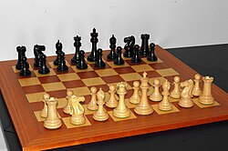

Chess is a board game for two players, played on a square board consisting of 64 squares arranged in an 8×8 grid. The players, referred to as "White" and "Black", each control sixteen pieces: one king, one queen, two rooks, two bishops, two knights, and eight pawns, with each piece type having a different pattern of movement. An enemy piece may be captured (removed from the board) by moving one's own piece onto the square it occupies. The objective of the game is to checkmate (threaten with inescapable capture) the enemy king. There are also several ways a game can end in a draw.
The recorded history of chess dates back to the emergence of chaturanga in 7th-century India. Chaturanga is also thought to be an ancestor of similar games like janggi, xiangqi, and shogi. After its introduction to Persia, it spread to the Arab world and then to Europe. The modern rules of chess emerged in Europe at the end of the 15th century, becoming standardized and gaining universal acceptance by the end of the 19th century. Today, chess is one of the world's most popular games, with millions of players worldwide.
To start the game, White's pieces are placed on the first rank in the following order, from left to right: rook, knight, bishop, queen, king, bishop, knight, rook. Pawns are placed on each square of the second rank. Black's position mirrors White's, with equivalent pieces on every file.[2] The board is oriented so that the right-hand corner nearest each player is a light square; as a result the white queen always starts on a light square, while the black queen starts on a dark square. This may be remembered by the phrases "white on the right" and "queen on her color".
In informal games, colors may be decided either by mutual agreement, or by lot. The rules of chess do not prescribe any particular method for deciding colors by lot, but a common traditional method is to conceal a white pawn in one hand and a black pawn in the other and have the opponent choose.
Link to where you can read more details about chess.